世界平和までのロードマップの実践編として、対立を暴力ではなく対話で代謝するために世界中で発明されてきた技法・仕組み・運動・知恵を集めた図鑑です。恣意的なコレクションにならないよう、明文化した収載基準に沿って選定し、各項目にエビデンス水準ラベルと出典を添えています。まだまだ収録できていない実践がたくさんあります——世界の平和実現に向けての活動を、ぜひ教えてください。
「良さそうなもの」を編集者の好みで集めると、図鑑は恣意的なコレクションになってしまいます。そこでこの図鑑では、次のいずれかを満たす実践のみを収載しています。
あわせて、各項目にエビデンス水準のラベルを付けています。水準が低い＝価値が低い、ではありません。伝統知には伝統知の重みがあります。ラベルは「どんな種類の裏付けがあるか」を正直に示すためのものです。
準拠している主なデータベース：
OECD 熟議民主主義データベース（733事例）
Participedia
Global Nonviolent Action Database（スワースモア大学）
USIP 真実委員会デジタルコレクション
NobelPrize.org
※「提供中」タグのある項目は当工房が提供しているものです。当事者による掲載であり、中立的な第三者評価ではありません。基準に照らした位置づけは各項目のラベルの通りです。
※これらの実践が世界平和にどうつながるのか——戦略の全体像は世界平和までのロードマップ（戦略編）をご覧ください。ノーベル平和賞125年の全受賞者リストもそちらに収めています。
個人やチームが、対話の筋肉を意図的に鍛えるための方法論たち。複数国での実施実績と公開された実施方法を持つものを収載しています。
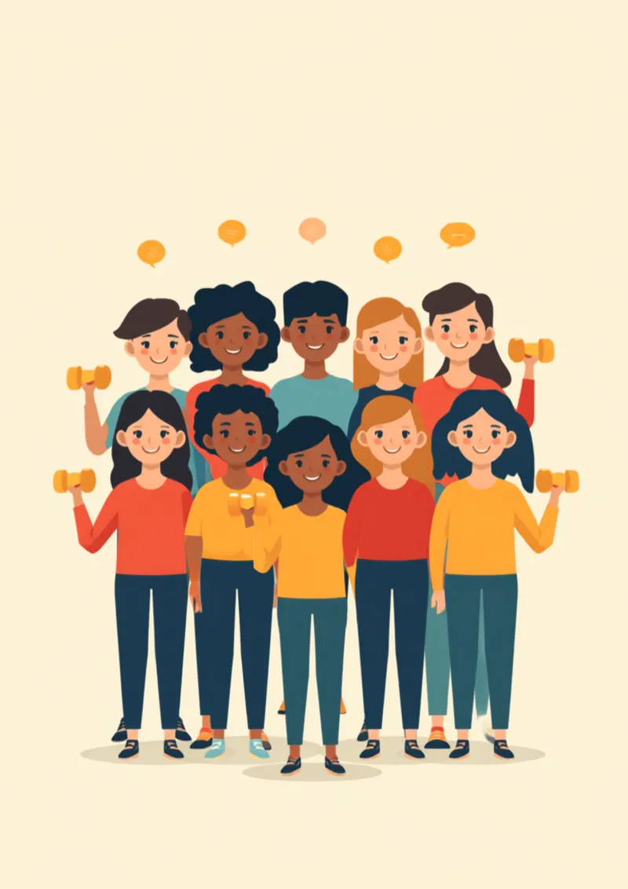
民主主義に必要な10のスキル（傾聴・共感・反対・妥協など）を「筋肉」に見立て、1回30分のセッションで1つずつ鍛えるトレーニング。デンマークの民主主義の祭典フォルケモーデで生まれ、現在は国際NGOのもと世界の複数の国に広がっています。当工房は日本での公認トレーナーとして体験会・合宿・企業研修を提供しています。
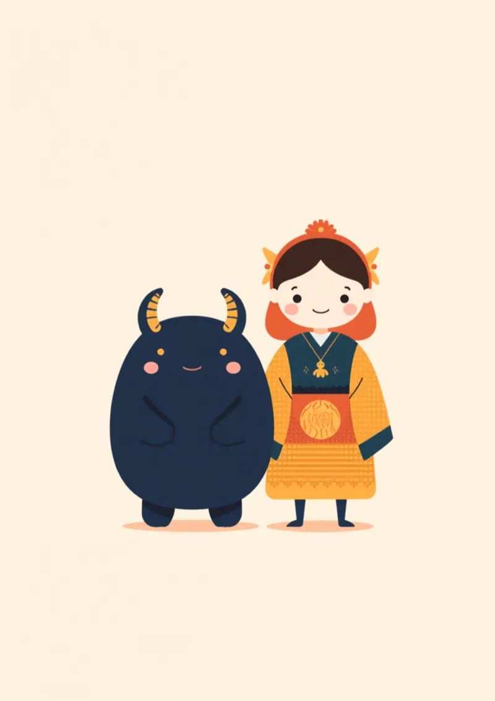
職場のすれ違いを生む認知の癖に「妖怪」と名前をつけて外在化し、それを乗り越える10の共創筋を「式神」として鍛える、日本生まれのメソッド。災いに名前をつけて人を責めずに向き合ってきた日本の妖怪文化の知恵を、現代の組織開発に接続しています。2026年開始の新しいメソッドのため外部評価はこれからです——収載基準の例外として、当事者掲載であることを明示して収録しています。
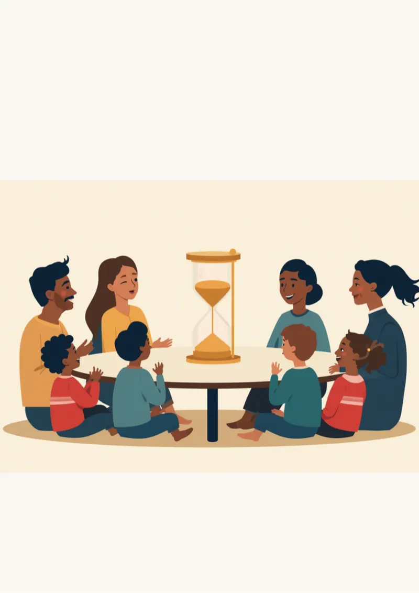
フィンランドの基金Sitraで開発された、立場や知識の差があっても全員が対等に話せるように設計された対話メソッド。結論を出すことを目的とせず、理解を深めることに徹するのが特徴で、自治体・学校・企業に広がり、国民的な「対話の日」の土台にもなっています。
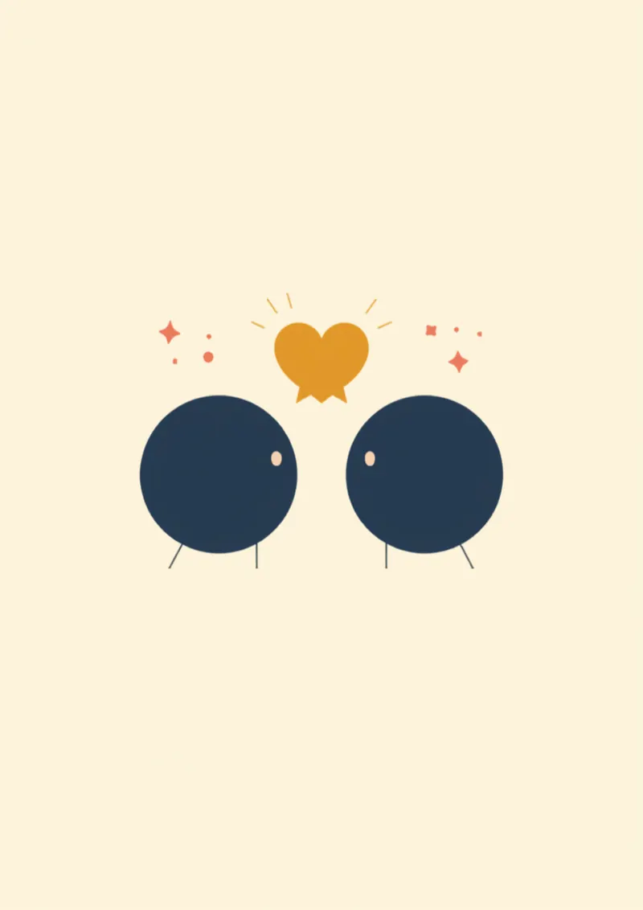
心理学者マーシャル・ローゼンバーグが体系化した、観察・感情・ニーズ・リクエストの4要素で対立をほどくコミュニケーション技法。相手を裁く言葉を、自分の内側で起きていることを伝える言葉に置き換えます。紛争地の調停から家庭や学校まで、世界中で使われています。トレーニング効果の実証研究も看護・教育分野を中心に蓄積されつつあります。
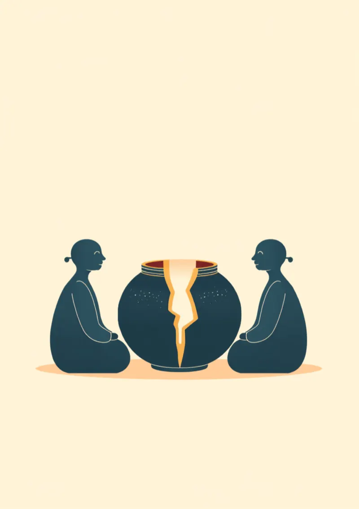
罪や傷を「罰」ではなく、当事者と関係者の対話によって修復しようとする司法・教育の実践。ニュージーランドのマオリの伝統をはじめ、世界各地の知恵に根を持ち、少年司法や学校のいじめ対応、地域の紛争解決に広がっています。Strangら（2013）によるキャンベル共同計画の系統的レビューでは、修復的司法対話が再犯の減少と被害者の満足度向上に関連することが示されています。
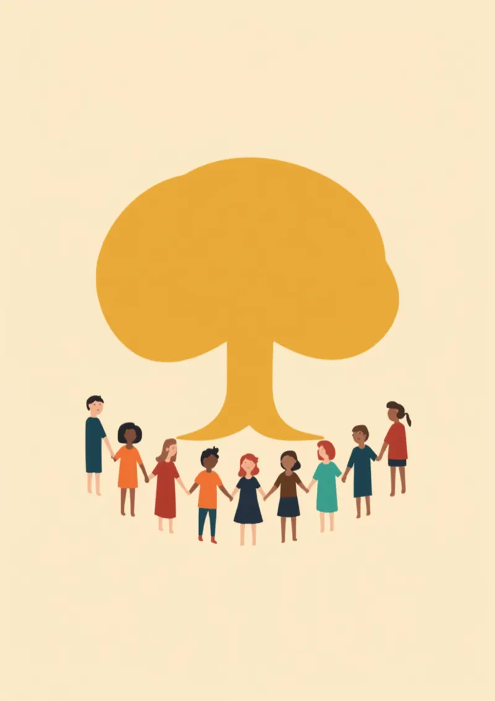
環境哲学者・仏教学者のジョアンナ・メイシーが体系化したワーク。世界の痛みへの悲しみや絶望を否認せずに見つめ、それを世界とのつながりの感覚と行動の力に変える「螺旋」のプロセスをたどります。環境運動や平和運動の担い手を内側から支えてきました。
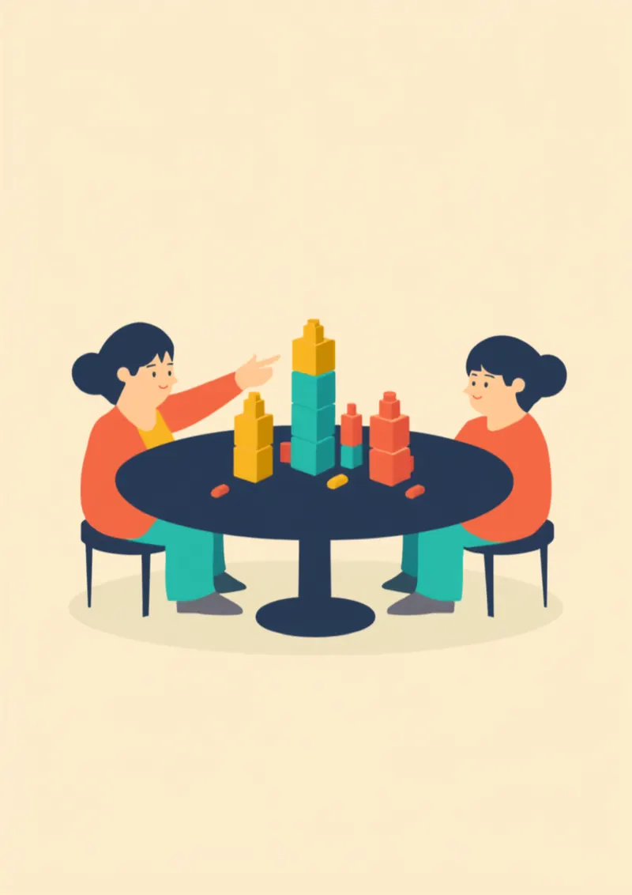
レゴ社の経営課題から生まれた、ブロックで考えを外在化する対話メソッド。全員が作り、全員が語るルールにより、声の大きさに関係なく一人ひとりの視点が場に出ます。答えにくい問いほど、手が先に語り出す。当工房では2013年から500回以上提供してきました。
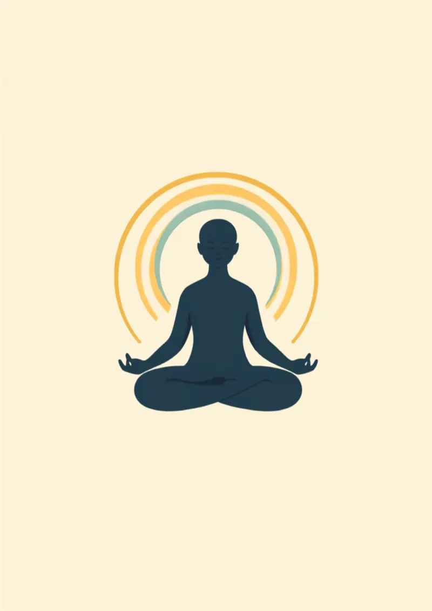
いまここの体験に、評価や判断を挟まずに注意を向ける心の訓練。仏教の瞑想の知恵に根を持ち、医療・教育・ビジネスへと世界中に広がりました。刺激と反応の間に「間」をつくる力は、あらゆる対話の筋肉の土台になります。ストレス低減など個人への効果は体系的レビューが多数ある一方、対話や平和構築への波及効果はまだ研究途上です——その限定つきでAラベルとしています。
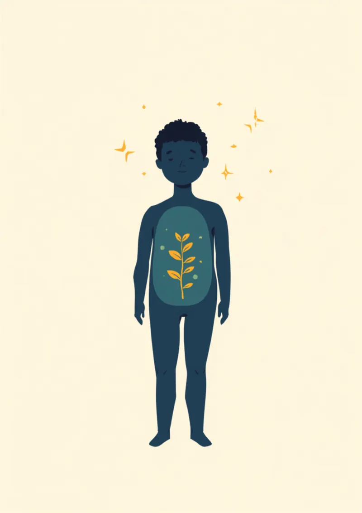
SDGsのような外側の目標を実現するために必要な「内面の成長」を、5カテゴリー23スキルに体系化した国際イニシアチブ。あり方・考え方・つながり方・協働・行動という枠組みで、世界の企業・教育機関・研究者が参加しています。
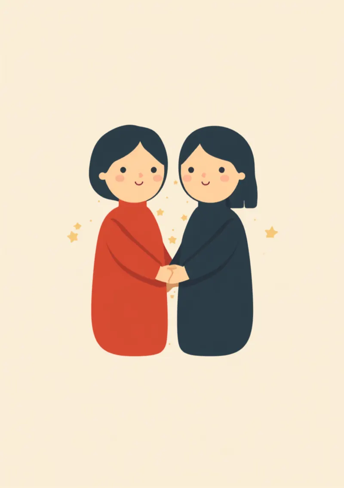
政治的に「赤」と「青」に引き裂かれたアメリカで、保守とリベラルの市民が同数で集まり、決められた対話の作法で互いの話を聴き合う草の根運動。相手を変えることではなく、相手を正確に理解することを目的に置いているのが特徴です。
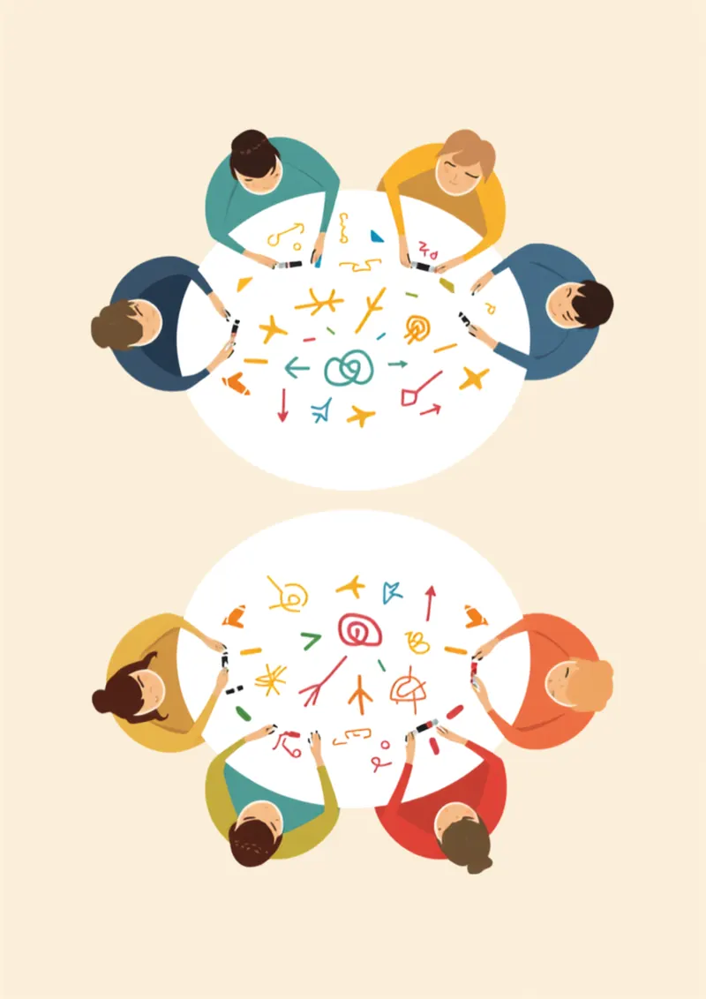
カフェのような少人数のテーブルで対話し、メンバーを入れ替えながらアイデアを他花受粉させていく大人数対話の技法。実施方法が公開されており、世界中の企業・行政・コミュニティで用いられています。Participediaにも手法として収載されています。
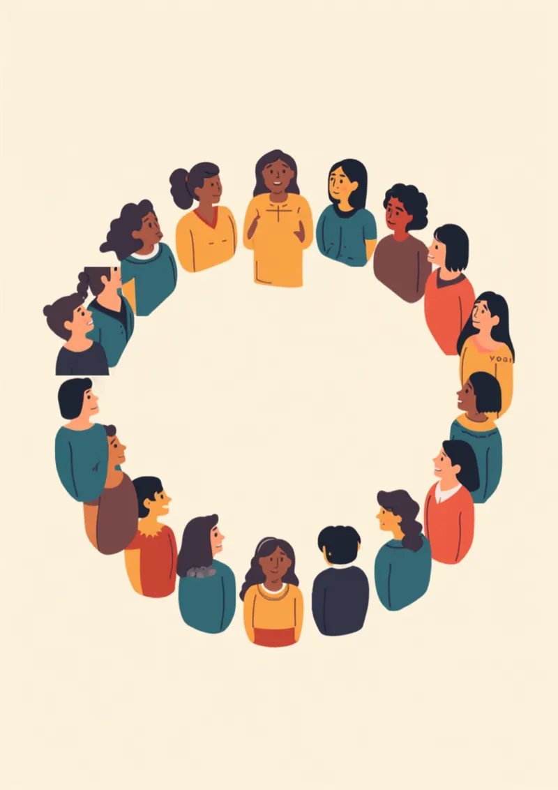
議題を参加者自身が持ち寄り、「いま一番大事な話」を自己組織的に話し合う会議手法。ハリソン・オーウェンが体系化し、実施方法は完全に公開されています。数人から数千人まで、130カ国以上で実践されてきました。
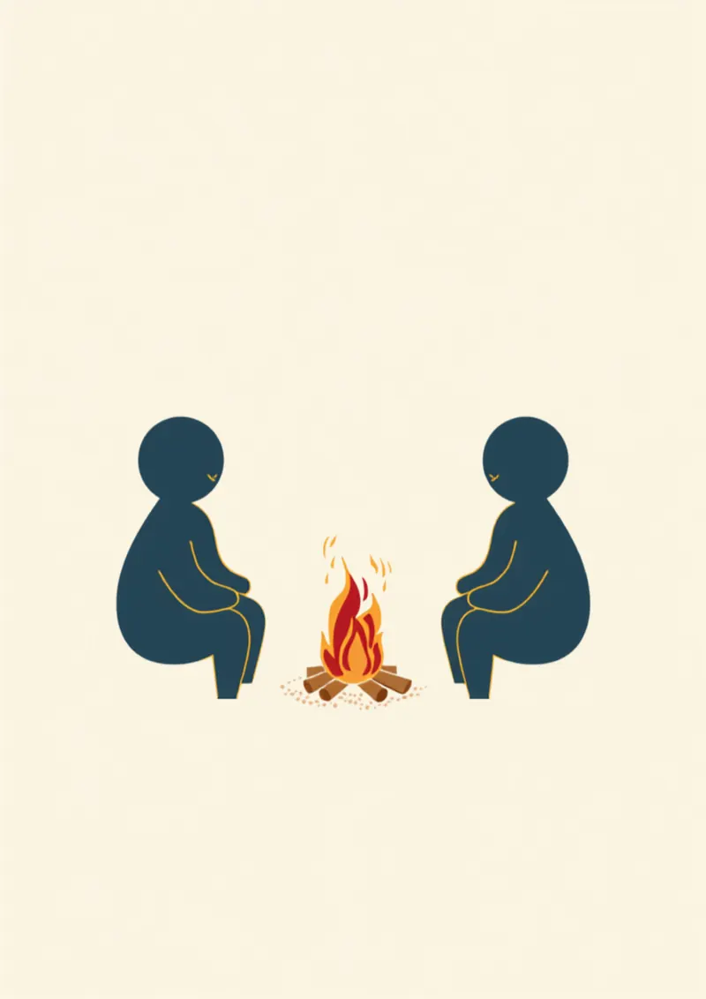
ノルウェー・リレハンメルのナンセン平和対話センターが、旧ユーゴスラビアの分断された地域で30年かけて磨いてきた、対立線を越えて対話の場をつくる方法論。バルカン各国に対話センターのネットワークが生まれ、学校の民族統合などの成果を残してきました。ノルウェー政府の基盤資金を受ける公的な平和センターの一つです。
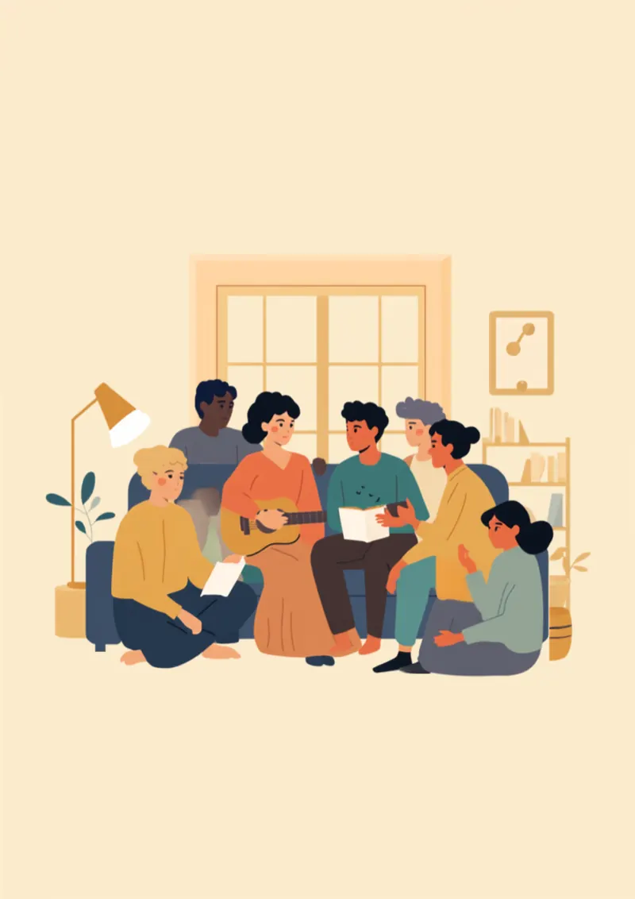
思想家グルントヴィの理念から生まれた、試験も成績もない、対話と共同生活による大人の学びの場。180年にわたりデンマークの民主主義文化の土壌となり、北欧各国に広がって法制度にも位置づけられています。デモクラシーフィットネスが生まれたデンマークの対話文化の、いわば母体です。
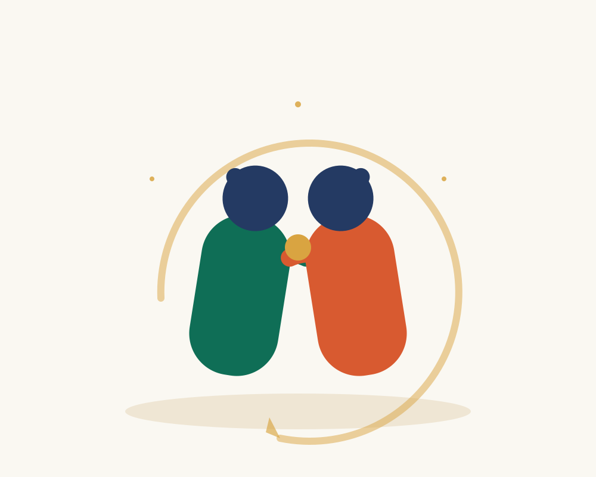
植芝盛平が創始した、相手を打ち倒すのではなく、攻撃の力を受け流して無力化することを原理とする武道。開祖が「合気道は愛なり」と語ったように、勝ち負けではなく対立そのものを和合へと転じる思想を、身体の技として組み立てました。海外では対立解決やリーダーシップの研修者が「攻撃にぶつからず、相手と共に動く」比喩として引くほど広く実践されています。平和構築への効果が実証された技法というより、非暴力を身体で学ぶ土地の知恵としての収載です。
対話を個人のスキルにとどめず、社会の意思決定の仕組みそのものに組み込んだ発明たち。OECDの熟議民主主義データベース（733事例・34カ国）とParticipediaに収載・記録されている制度を中心に選んでいます。
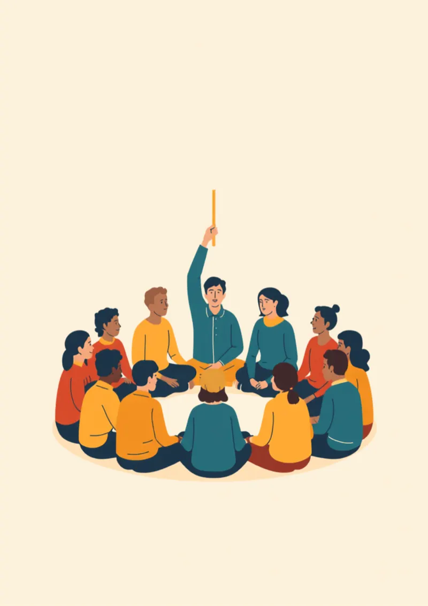
くじ引きで無作為に選ばれた市民が、専門家の話を聞きながら数カ月かけて熟議し、社会を割るような難題への提言をまとめる仕組み。アイルランドでは憲法に関わる論点で国民的合意への道を開き、フランスの気候市民会議など世界に広がっています。OECDはこの種の「くじ引き熟議」を34カ国733事例まで追跡し、比較実証研究として12のモデルと成功条件を整理しています。
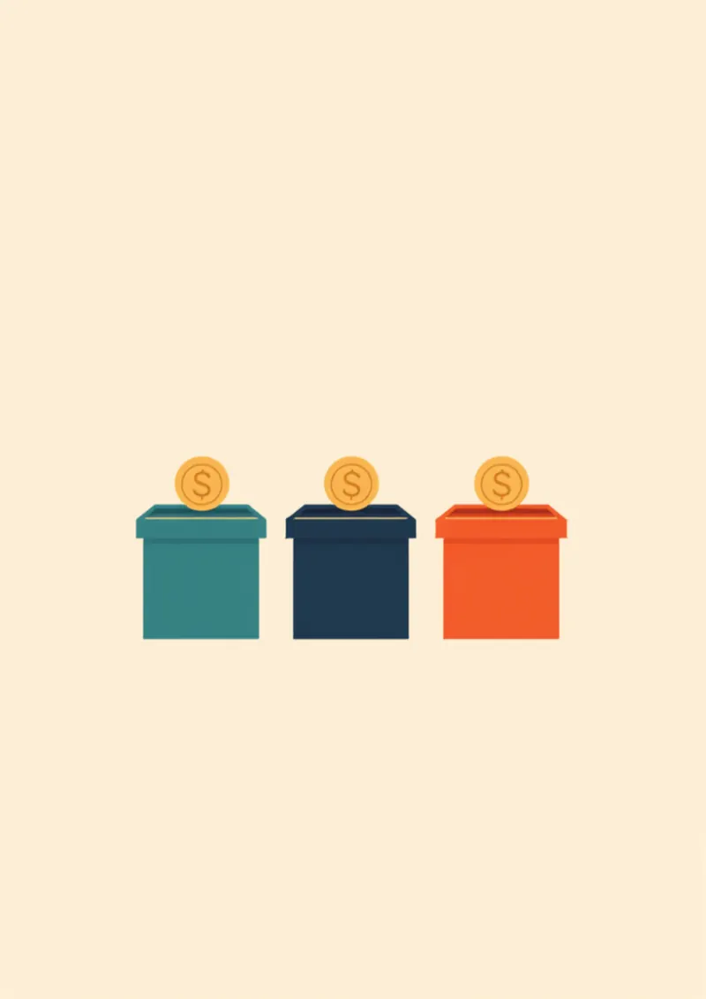
ブラジルのポルトアレグレ市で始まった、市民が公共予算の使い道を直接話し合って決める仕組み。行政任せだった「お金の配分」を市民の対話のテーブルに載せたことで、世界数千の自治体に広がる発明になりました。ブラジルの自治体を対象とした実証研究では、導入自治体で保健・衛生への支出増と乳幼児死亡率の低下との関連が報告されています（Gonçalves 2014ほか）。
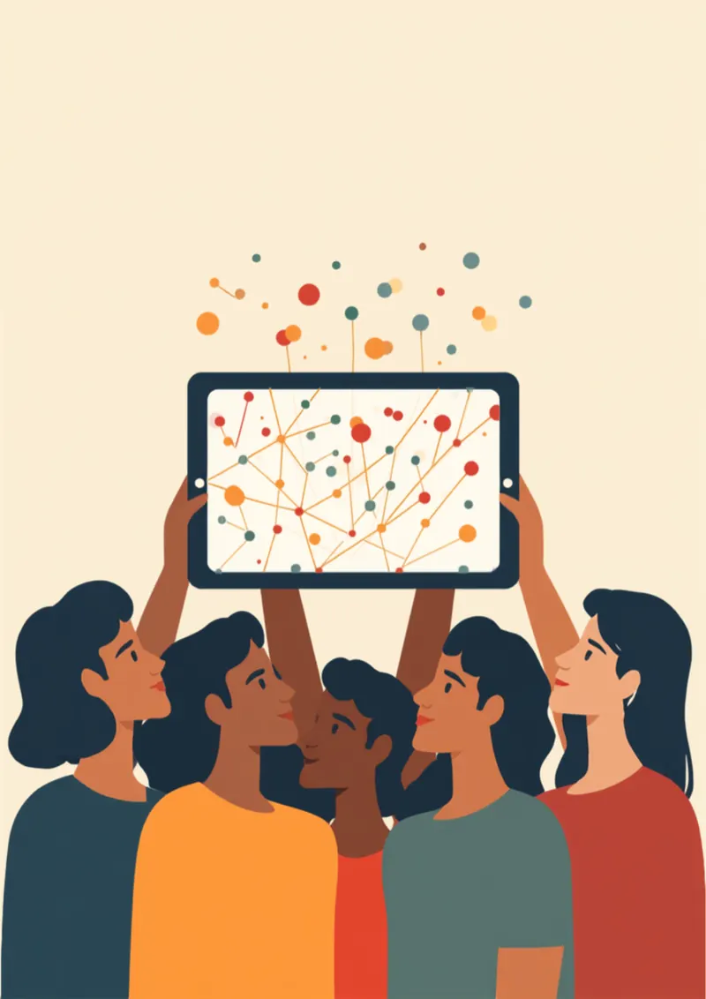
数万人規模の市民の意見をオンラインで集め、対立の中から「多くの人が同意できる文」を可視化して政策づくりにつなげる台湾の実践。テクノロジーを分断の増幅ではなく、合意の種の発見に使った先駆例です。
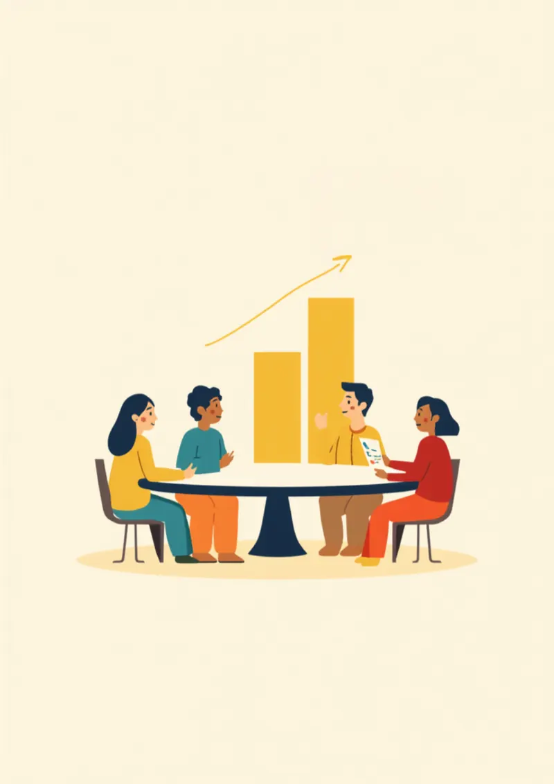
「十分な情報と対話の機会があれば、世論はどう変わるか」を測る手法。無作為抽出された市民が、バランスの取れた資料と専門家との質疑をはさんで熟議し、前後で意見を測定します。スタンフォード大学のフィッシキンらが体系化し、日本を含む50以上の国・地域で150回以上実施され、事前・事後比較のデータが蓄積されています。
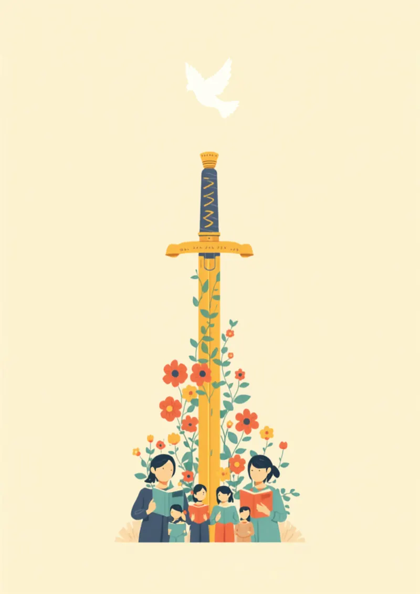
コスタリカは1948年に常備軍を廃止し、その予算を教育と福祉に振り向けました。「平和は軍事力ではなく制度と教育でつくる」という選択を国家レベルで実行した稀有な例で、国連平和大学（UPEACE）は1980年に国連総会決議で設立され、この地にあります。
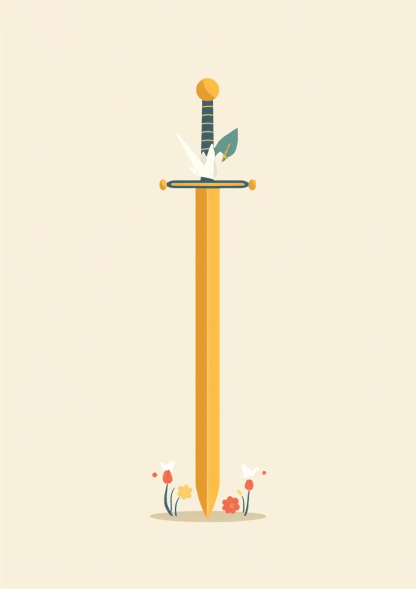
日本国憲法第9条は、国権の発動としての戦争を放棄し、戦力を持たないことを国家の最高法規に書き込んだ条項。コスタリカの軍隊廃止と並び、「平和は軍事力ではなく制度で担保する」という選択を憲法のレベルで宣言した稀有な例です。その解釈と運用は国内で議論が続いていますが、戦争放棄を成文憲法の中心に据えたモデルとして、比較憲法や世界の平和運動でくり返し参照され、9条にノーベル平和賞をという市民運動も生まれてきました。
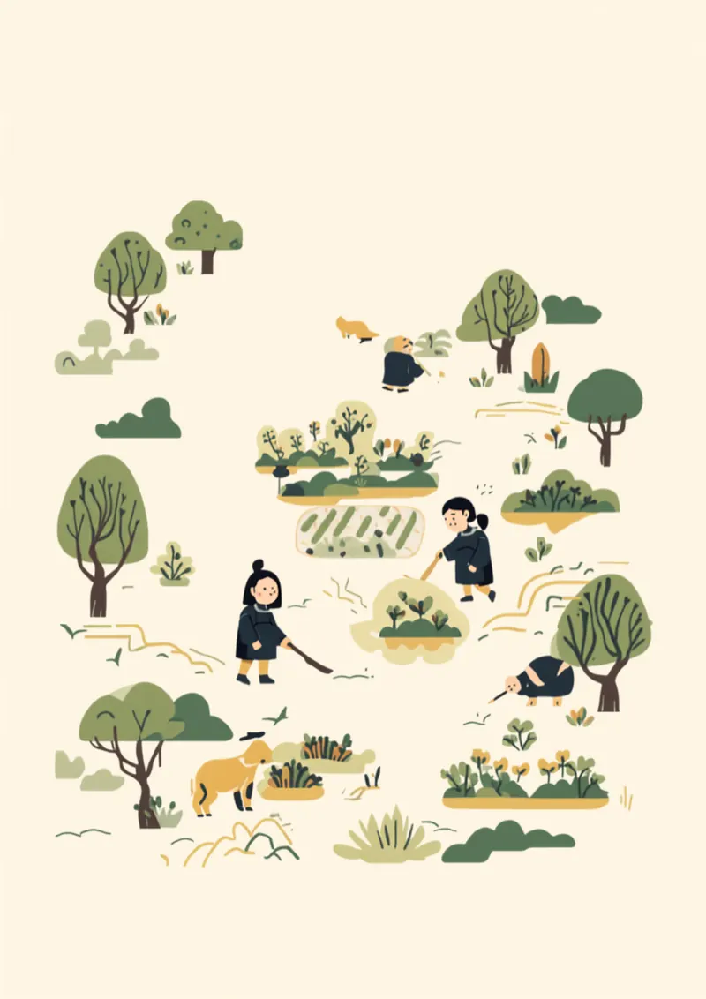
村の森や草地を、私有にも国有にもせず、集落の全員で使い方のルールを決めて共同管理してきた日本の伝統的な自治の仕組み。誰がいつどれだけ採ってよいかを細かく取り決めることで、資源の枯渇と人どうしの争いの両方を防いできました。ノーベル経済学賞のエリノア・オストロムは『コモンズのガバナンス』（1990）で、この入会をマッキーンらの研究とともに、対立を生まない自治の成功モデルとして世界に紹介しています。「共有地の悲劇」は必然ではないと示した、査読研究の裏づけを持つ実証例です。
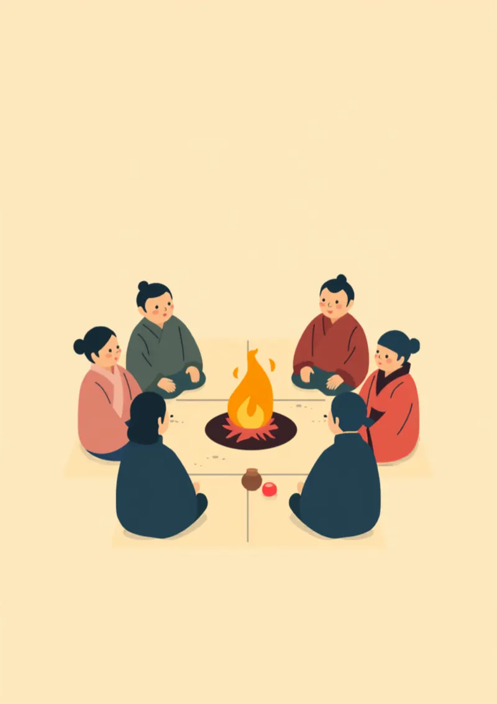
民俗学者の宮本常一が『忘れられた日本人』の「対馬にて」で描いた、村の寄合の光景。結論を多数決で急がず、二日でも三日でもかけて、一人ひとりが納得するまで車座で話し合う。身分や声の大きさに関わらず全員がその場に居て合意を紡ぐこの作法は、くじ引き熟議や市民議会の、いわば日本土着の祖型として読むことができます。制度化された記録ではなく、民族誌的な聞き書きに残る伝統知としての収載です。
深く傷ついた共同体が、対話によって関係を縫い直そうとしてきた歴史的な試みと伝統の知恵。制度的な試みはUSIPの真実委員会デジタルコレクション（35カ国・41委員会）に、伝統知は民族誌的な記録に依拠しています。
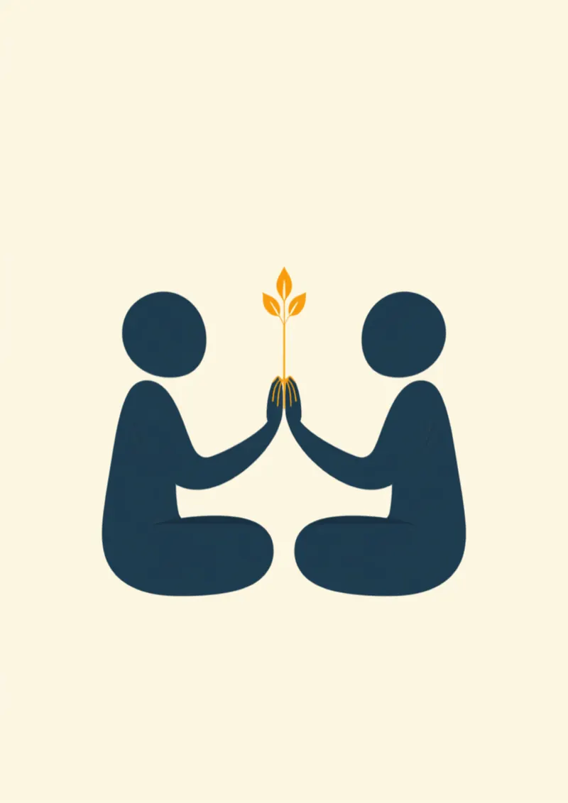
アパルトヘイト後の南アフリカで、処罰よりも「真実を語ること」と「赦し」によって社会を縫い直そうとした国家的プロジェクト。ツツ大主教が体現した「人は他者を通じて人になる」というウブントゥの思想が、その土台にありました。同種の委員会は世界35カ国で41例が設けられ、USIPのデジタルコレクションに設立文書と最終報告書が収蔵されています。
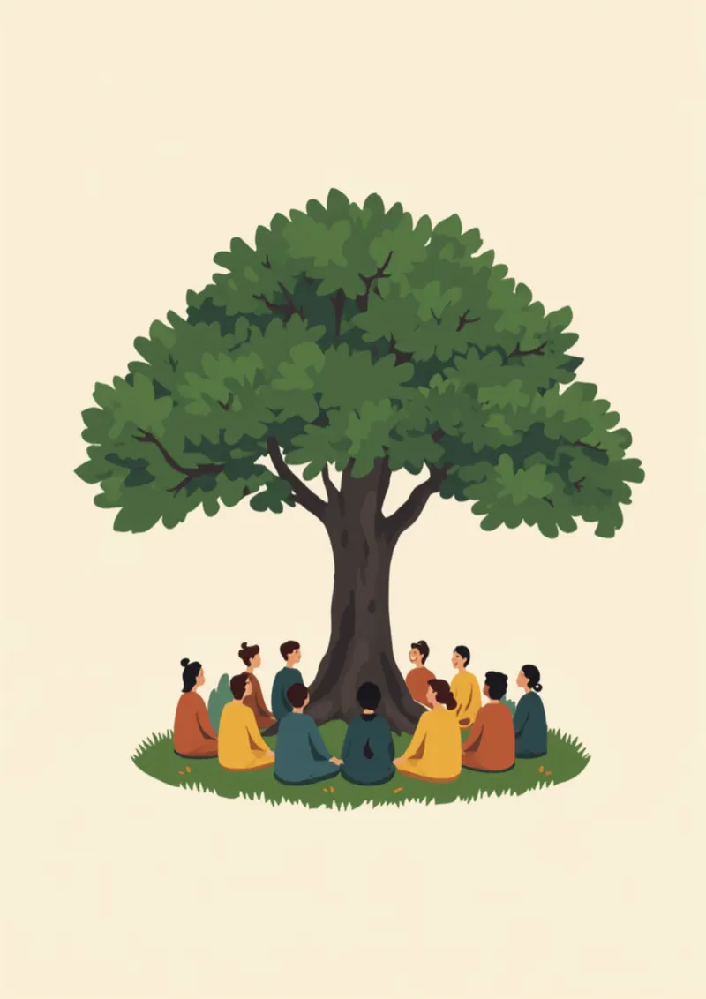
1994年の大虐殺の後、膨大な事件を裁くために、伝統的な共同体の集会を土台として再構築された草の根の裁判制度。加害者と被害者が同じ村で生きていくために、地域の対話によって裁きと和解を担いました。約1万2千の法廷で100万件超が審理され、その功罪については研究者・人権団体の評価が分かれています——課題も含めて、共同体による正義の巨大な実験でした。
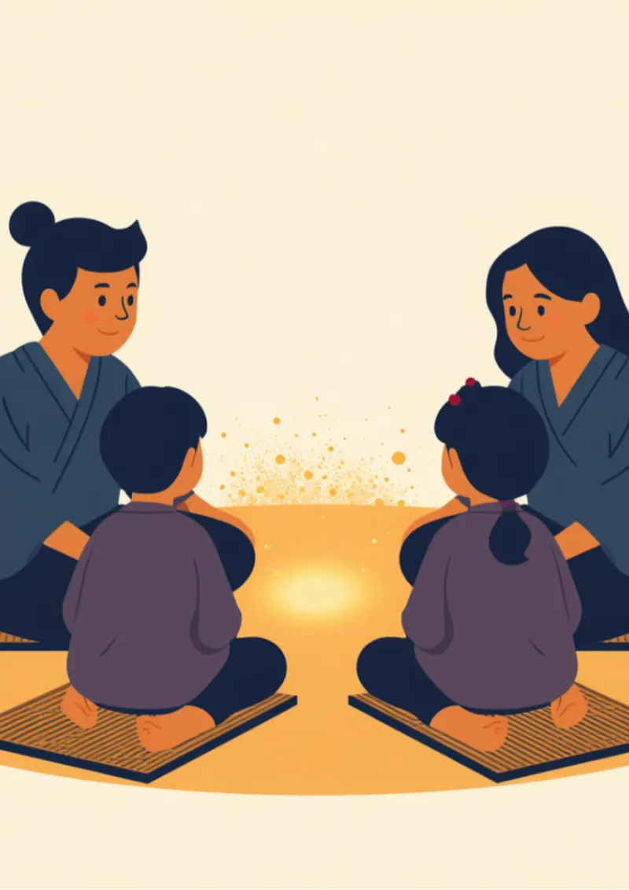
ハワイに伝わる、もつれた関係を「正しく整える」ための伝統的な対話と和解の作法。家族や共同体の中の葛藤を、年長者の進行のもとで語り、赦し合い、手放していくプロセスとして受け継がれてきました。民族誌的な記録に残る伝統知としての収載であり、近年の自己啓発的な流行とは区別しています。
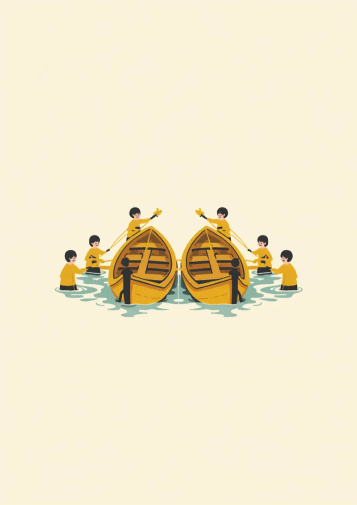
水俣病によって、被害者と加害企業、そして「会社の町」で沈黙を選んだ住民までが幾重にも引き裂かれた水俣で、断たれた人と人の絆を「結い直す」ために続けられてきた地域再生の営み。「もやい」とは船と船をつなぎ、共同で作業することを指す言葉です。1994年の慰霊式で市長が患者の言葉としてこの語を公式に語って以降、行政と住民が幾度も車座の対話を重ねてきました。真実和解委員会が国家の規模でおこなったことを、ひとつの地域が三十年かけて実践してきた、日本の和解の知恵といえます。
武器を持たない市民が、対話と非暴力の力で歴史を動かした運動たち。いずれもスワースモア大学の世界非暴力行動データベースに収載された事例です。ChenowethとStephanによる323件の比較研究（1900–2006年）は、非暴力の市民抵抗が暴力的な闘争のおよそ2倍の確率で目的を達成したことを示しています。
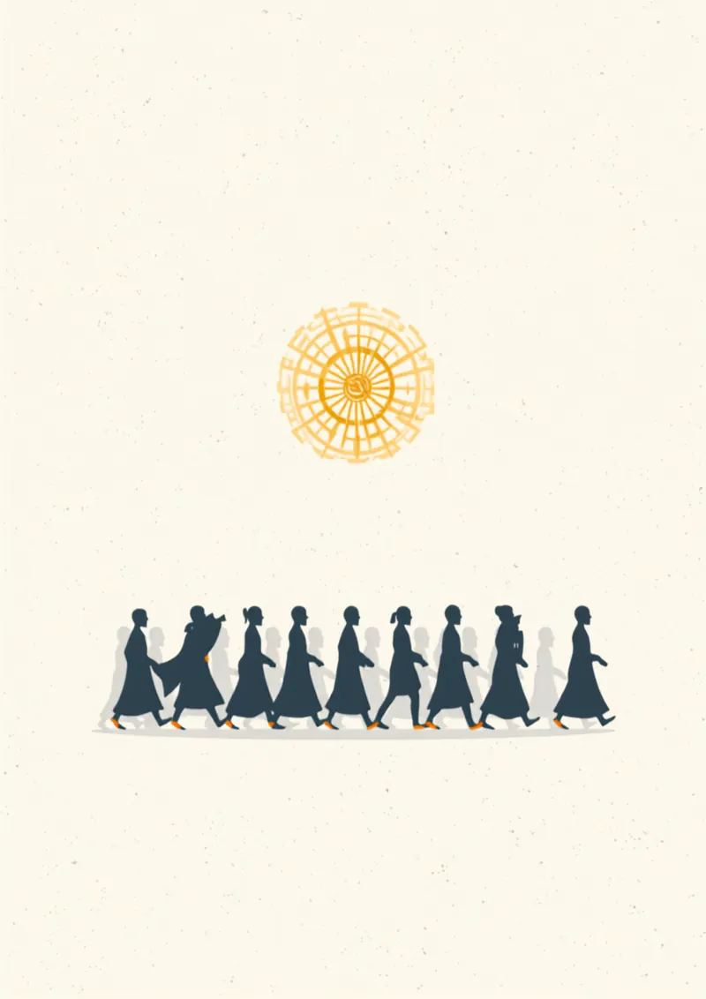
ガンディーが体系化した「真理の把持」を意味する非暴力抵抗の哲学と実践。敵を打ち倒すのではなく、相手の内なる良心に働きかけて変化を促すという発想は、その後の世界中の非暴力運動の源流になりました。
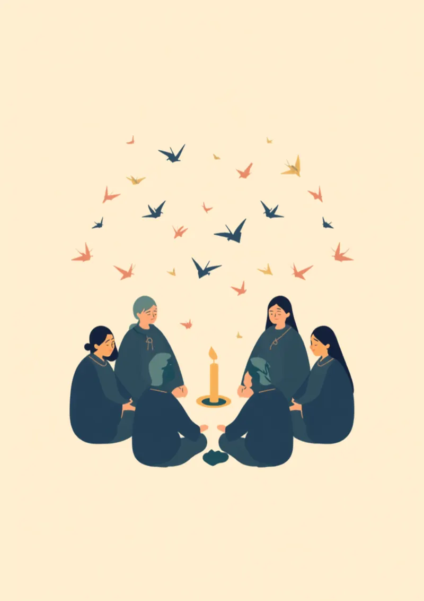
広島と長崎の被爆者が1956年に結成した全国組織。武器や報復ではなく、自らの被爆体験を語りつづける「証言」の力で、核兵器は二度と使われてはならないという規範を世界に築いてきた草の根運動です。その積み重ねは核兵器禁止条約（2017）へと結実し、2024年、日本被団協はノーベル平和賞を受賞しました（核兵器廃絶をめざす国際運動ICANも2017年に同賞を受賞しています）。ロードマップのノーベル平和賞受賞者リストもあわせてご覧ください。
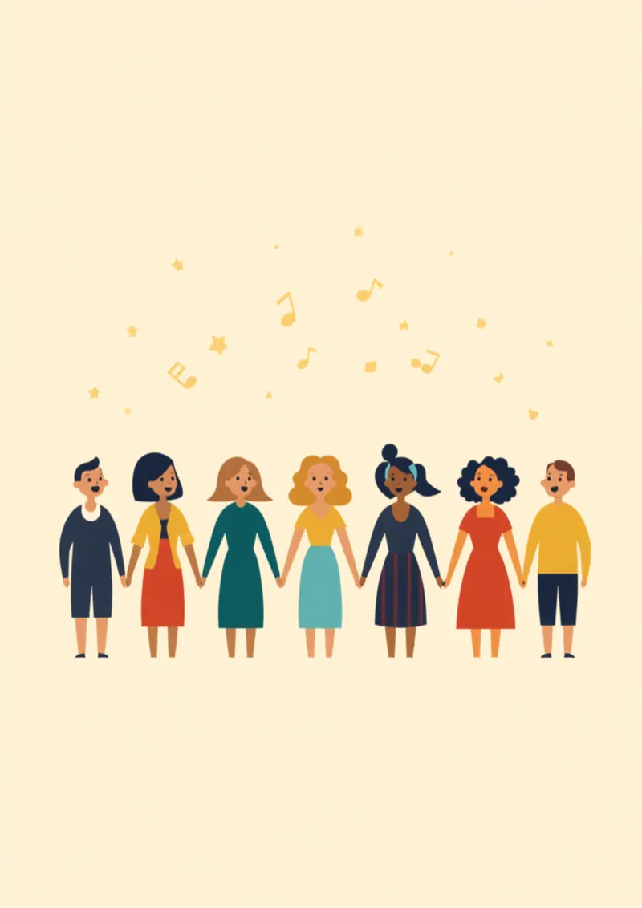
1980年代末、エストニアをはじめバルト三国の人々が、集会で共に歌うことによって独立への意思を示した非暴力革命。1989年には約200万人が3国を貫いて手をつなぐ「バルトの道（人間の鎖）」が実現しました。
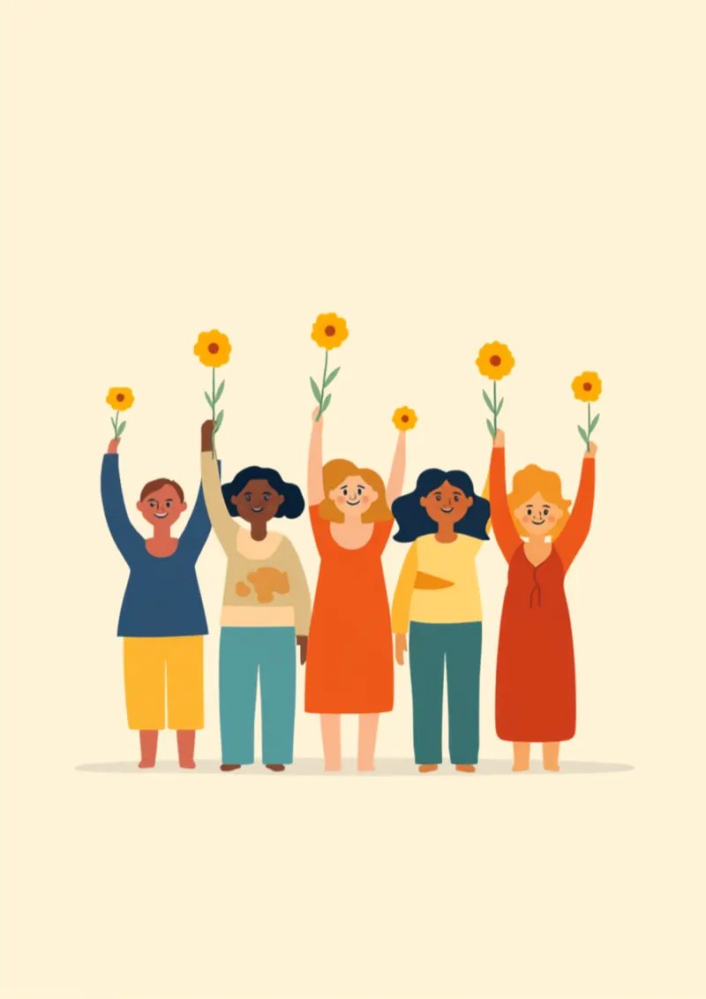
マニラの大通りに集まった数百万の市民が、祈りと花と非暴力の人の波によって独裁政権を平和裏に終わらせた革命。戦車の前に立つ市民と修道女の姿は、非暴力の力の象徴として世界に記憶されています。
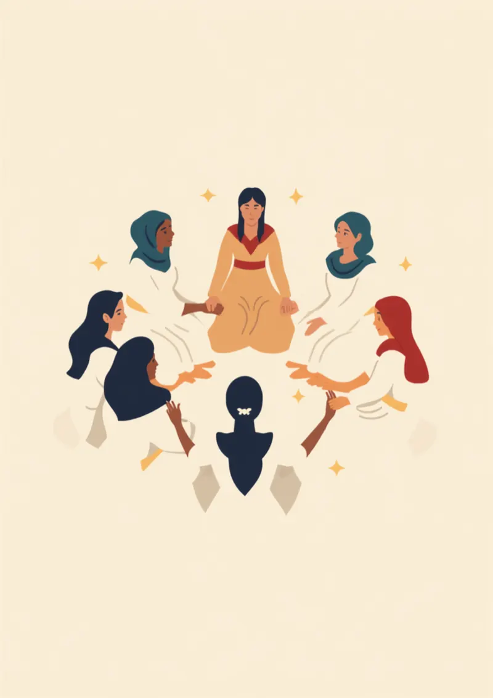
内戦下のリベリアで、キリスト教徒とムスリムの女性たちが宗教の壁を越えて手を組み、座り込みと祈りと交渉によって和平協議を動かした非暴力運動。リーダーのリーマ・ボウイーは2011年にノーベル平和賞を受賞しました。ロードマップのノーベル平和賞受賞者リストもあわせてご覧ください。
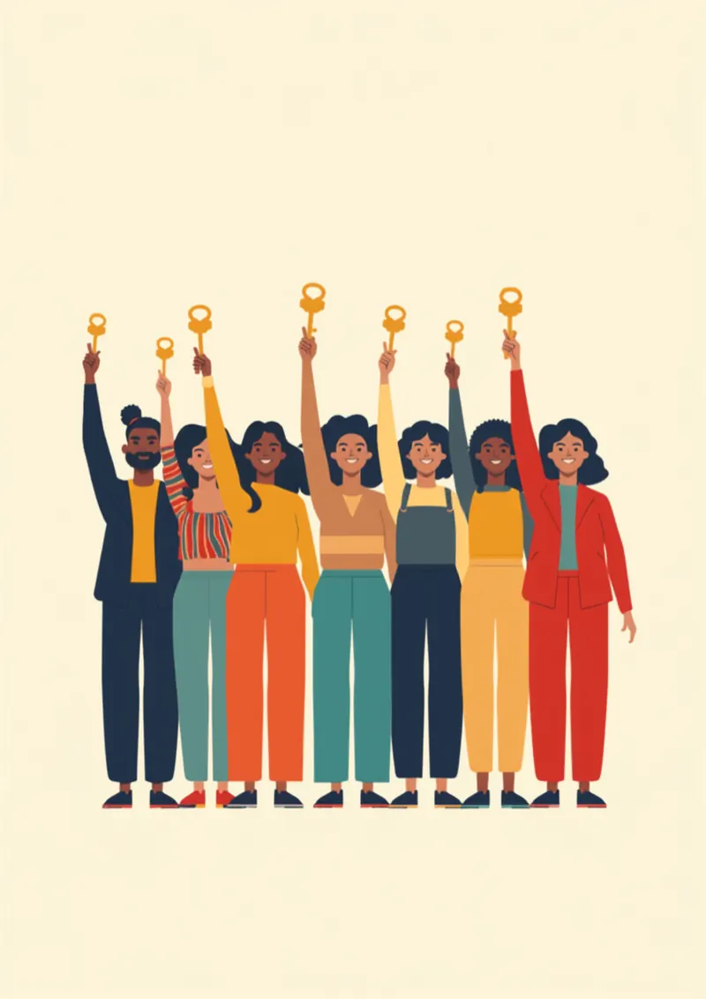
1989年のチェコスロバキアで、広場に集まった市民の非暴力のデモと対話が、流血なしに体制転換を実現した革命。その静かさから「ビロード（天鵞絨）」の名がつきました。劇作家ハヴェルが大統領となったことも象徴的です。
ここに載っているのは、世界の知恵のほんの一部です。あなたの知っている、世界の平和実現に向けての活動を、ぜひ教えてください。技法、仕組み、運動、土地の知恵——ジャンルは問いません。いただいた情報をもとに、この図鑑を一緒に育てていけたら嬉しいです。